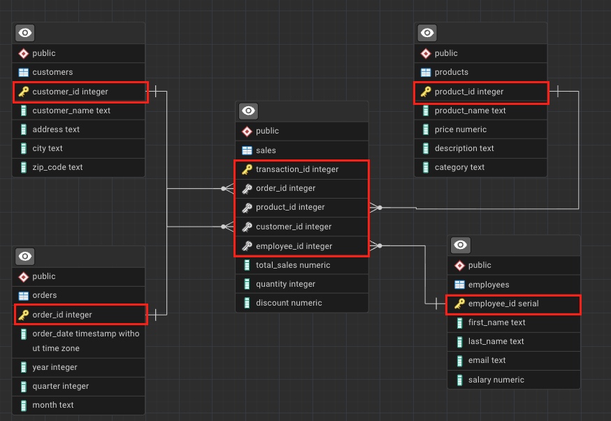
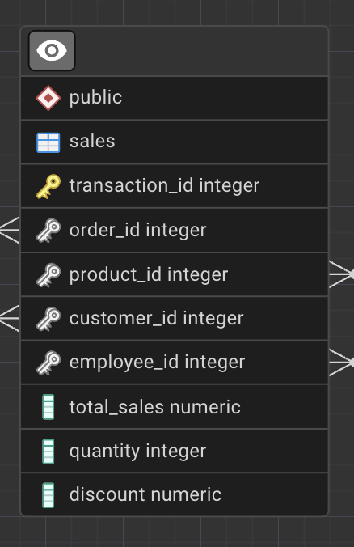
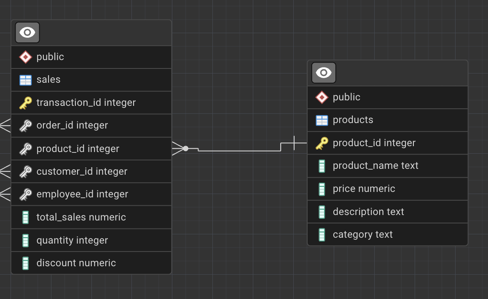
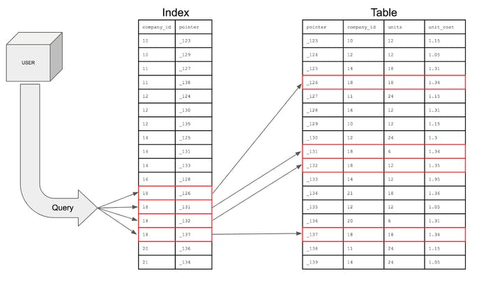

Imagine you’ve just joined a company as a data analyst.
The company sells products through an online channel and stores its operational data in a PostgreSQL relational database.
The database captures information about:
customers who place orders
products that are sold
employees involved in the sales process
orders placed over time
individual sales transactions
Your role as an analyst is to query this data to answer business questions related to:
revenue and sales performance
product popularity
customer behavior
employee contribution
time-based trends
Learning Goals
In the previous session, you learned about different types of databases and the database management systems used to define, query, and manage them.
Without databases, you wouldn’t be able to retrieve, update, or delete data.
Before analysis can begin, however, data must first be stored, structured, and related correctly.
In this session, we will learn about the core building blocks of a relational database:
tables, rows, and columns
keys and relationships
indexes and performance trade-offs
data types in PostgreSQL
database schemas and analytical modeling concepts
By the end of this session, you should be able to read and understand a relational schema and write more efficient SQL queries.
A relational database consists of one or more tables made up of rows and columns, and these tables are linked by relationships.
In this course, we will work with a sales analytics database that includes tables such as:
sales
orders
products
customers
employees
Each table stores information about a specific business entity, and relationships between tables allow us to combine this information during analysis.
The list on the left represents all the columns in a table. Each column represents a specific attribute of a transaction, such as total_sales, quantity, or product_id. Each row (record) represents a single transaction.

Tip
Another name for a record is a tuple.
We will revisit tuples when working with Python and relational data.
Tables are such a common structure that you’ve likely interacted with them without realizing it.
For example, when you place an order on an e-commerce website like Amazon:
Each row represents a different order or transaction
To store data efficiently and enable relationships between tables, relational databases rely on keys and indexes.
Keys
A key is a column (or set of columns) that uniquely identifies a row in a table.
Keys are essential for locating records and defining relationships between tables.
If you refer back to the sales table, you’ll notice a key icon next to the transaction_id column.
This indicates that transaction_id is a key.
In our database, each row in the sales table represents a single transaction line, uniquely identified by transaction_id.

Primary Key
A primary key uniquely identifies each record in a table.
Each table can have only one primary key, and it must:
Be unique
Never be NULL
Remain stable when referenced by other tables
In the sales table, transaction_id is the primary key.
transaction_id
order_id
product_id
customer_id
total_sales
1001
501
12
3001
49.99
1002
501
18
3001
19.99
1003
502
12
3005
49.99
1004
503
25
3008
89.99
Candidate Key
A candidate key is any column (or set of columns) that can uniquely identify a row.
For example, in the customers table, customer_id and email columns are candidate keys.
This means both columns are candidate keys.
From the set of candidate keys, one is chosen as the primary key.
In this schema, customer_id is selected as the primary key, while email remains an alternative identifier.
customer_id
customer_name
email
city
3001
Alice Johnson
alice.johnson@email.com
Berlin
3002
Mark Thompson
mark.thompson@email.com
Paris
3003
Elena Petrova
elena.p@email.com
Madrid
3004
David Chen
david.chen@email.com
London
Composite Key
A composite key is formed by combining two or more columns when no single column is sufficient to uniquely identify a row.
For example, (order_id, product_id) could uniquely identify rows in some transactional systems.
order_id
product_id
product_name
quantity
501
12
Wireless Mouse
1
501
18
USB-C Cable
2
502
12
Wireless Mouse
1
503
25
Mechanical Keyboard
1
In this table:
order_id alone is not unique
product_id alone is not unique
The combination (order_id, product_id) uniquely identifies each row
This combination forms a composite key.
Surrogate Key
A surrogate key is a system-generated identifier with no business meaning.
The transaction_id column is a surrogate key; its only purpose is to uniquely identify each transaction.
transaction_id
order_id
product_id
quantity
total_sales
1001
501
12
1
49.99
1002
501
18
2
19.99
1003
502
12
1
49.99
1004
503
25
1
89.99
Surrogate keys are often used even when natural or composite keys exist.
They are preferred in analytical systems because they:
simplify joins
reduce index size
improve query readability
remain stable even if business rules change
Foreign Key
A foreign key is a column (or set of columns) that references a primary key in another table.
For example, the product_id column in the sales table references the product_id primary key in the products table.
Foreign keys establish relationships between tables and allow us to join data across entities.
Thus, Foreign key enforces referential integrity between the two tables which is crucial:
prevent invalid data (e.g., sales for non-existent products)
define how tables are related
enable joins between tables
preserve data consistency

Important
In analytical databases, foreign keys are sometimes not physically enforced for performance reasons, but they are always enforced logically in the data model.
Indexes
Imagine searching through a book to find all pages starting with the letter A.
Without an index, you would scan every page.
With an index (like a dictionary), you jump directly to the correct section.
Indexes work the same way in databases.
Indexes do not store new data.
They are special lookup structures that improve query performance.

NoteFull Table Scan
When a query checks every row instead of using an index, this is called a full scan.
Indexes improve read performance but come with trade-offs:
extra storage
slower inserts and updates
maintenance overhead
When Not to Create Indexes
Very small tables
Frequently updated columns
Columns with many NULL values
Columns with very low cardinality
Single-Column Index
A single-column index is built on one column.
Employee ID
Name
Contact Number
Age
1
Max
800692692
24
2
Jessica
800123456
35
3
Mikeal
800745547
49
Composite Index
Consider the same employees table, but now imagine that queries often filter by both name and age at the same time. Thus, composite index spans multiple columns, such as (name, age).
Composite indexes are most effective when queries filter columns in the same left-to-right order as the index definition.
employee_id
name
age
department
1
Max
24
Sales
2
Jessica
35
Marketing
3
Max
35
Finance
For an index defined as (name, age):
Efficient for queries filtering on name
Efficient for queries filtering on nameandage
Not efficient for queries filtering on age only
Unique Index
Unlike a regular index, a unique index enforces a rule, not just performance. A unique index ensures that values are not duplicated.
customer_id
customer_name
email
3001
Alice Johnson
alice@email.com
3002
Mark Thompson
mark@email.com
3003
Elena Petrova
elena@email.com
In the aboive table:
email values are unique
No two customers share the same email address
Creating a unique index on email:
prevents duplicate emails
guarantees data integrity
Use a unique index when:
values must be unique across rows
the column is frequently used for lookup
uniqueness is part of business logic
ImportantAre Keys Also Indexes?
Keys vs Indexes
From a database engine and storage point of view, keys and indexes are closely related, but they are not the same thing.
A key defines a logical rule (uniqueness, relationships)
An index is a physical data structure stored on disk to speed up access
How PostgreSQL Handles Them
Concept
Enforces Uniqueness
Improves Query Speed
Stored as Index
Primary Key
Yes
Yes
Yes (unique index)
Unique Constraint
Yes
Yes
Yes (unique index)
Foreign Key
No
Sometimes
No (by default)
Regular Index
No
Yes
Yes
Important Notes
Creating a primary key automatically creates a unique index
Creating a unique constraint automatically creates a unique index
Foreign keys do NOT create indexes automatically
Indexes exist to improve performance; keys exist to enforce rules
Data Types
Data types define what kind of data a column can store.
They ensure consistency, enable validation, and affect performance.
Consider the following example:
Employee Name
Salary ($)
Jan
100000
Alex
One hundred thousand
Kim
70k
Caution
Inconsistent data types make analysis impossible.
To calculate averages or totals, the column must enforce a numeric type.
Data Types in PostgreSQL
Numeric
Character
Date & Time
Boolean & Categorical
Identifier & Auto-Increment
JSON and Semi-Structured
Array
Special Data Types
Numeric Data Types
In PostgreSQL, numeric data types fall into three main groups:
Integers: whole numbers
Exact numerics: precise decimal numbers
Floating-point numbers: approximate decimals
Numeric data types are used for:
counts
quantities
prices
measurements
Main Numeric Data Types
Data Type
Description
Example Value
Memory Size
Typical Use Case
SMALLINT
Small-range whole numbers
12
2 bytes
Status codes, flags
INTEGER / INT
Standard whole numbers
2500
4 bytes
Quantities, counts
BIGINT
Very large whole numbers
9876543210
8 bytes
IDs, large counters
NUMERIC(p, s)
Exact precision decimal
NUMERIC(10,2) → 15432.75
Variable
Salary, revenue
DECIMAL(p, s)
Same as NUMERIC (SQL standard)
DECIMAL(8,3) → 123.456
Variable
Financial data
REAL
Approximate floating-point
3.14159
4 bytes
Scientific values
DOUBLE PRECISION
Higher-precision floating-point
0.0000123456789
8 bytes
Statistical calculations
Note
Notice how exact numerics (NUMERIC, DECIMAL) preserve precision, while floating-point types (REAL, DOUBLE PRECISION) may introduce rounding differences.
Performance vs Precision Trade-off
When choosing a numeric data type, you must balance precision, performance, and storage efficiency.
The table below summarizes the most common analytical requirements and the recommended PostgreSQL data types.
Requirement
Precision Needed
Performance Priority
Recommended Data Type
Row counts, simple counters
Exact
Very high
INTEGER
Large identifiers (IDs)
Exact
High
BIGINT
Financial values (salary, revenue)
Exact
Medium
NUMERIC(p,s)
Prices with decimals
Exact
Medium
DECIMAL(p,s)
Ratios, averages, KPIs
Approximate acceptable
High
DOUBLE PRECISION
Scientific measurements
Approximate acceptable
Very high
REAL / DOUBLE PRECISION
Index Size Considerations
Indexes inherit the storage and performance characteristics of the column type they are built on:
Index on INTEGER \(\rightarrow\)small\(\rightarrow\)cache-friendly
Index on NUMERIC \(\rightarrow\)larger\(\rightarrow\)slower to scan
Composite indexes amplify the effect of column size
ImportantBest Practice
Use the smallest numeric type that safely fits your data.
Prefer INTEGER over BIGINT if values fit
Use NUMERIC only when precision matters
Avoid premature use of NUMERIC for IDs or counters
Character Data Types
Character data types are used to store textual information such as names, descriptions, identifiers, and free-form text.
In PostgreSQL, character data types fall into three main groups:
Fixed-length characters — text with a fixed size
Variable-length characters — text with flexible size limits
Unbounded text — long or unpredictable text
Character data types are used for:
names
descriptions
emails
codes
comments
Main Character Data Types
Data Type
Description
Example Value
Memory Size
Typical Use Case
CHAR(n)
Fixed-length character string
CHAR(5) → ‘US’
n bytes (fixed)
Country codes, fixed formats
VARCHAR(n)
Variable-length string with limit
VARCHAR(50) → ‘Karen Hovhannisyan’
Variable (≤ n)
Names, emails
TEXT
Variable-length string, no limit
‘This product has been discontinued.’
Variable
Descriptions, comments
CHARACTER VARYING(n)
SQL-standard name for VARCHAR
CHARACTER VARYING(20) → ‘A123XZ’
Variable (≤ n)
Codes, identifiers
Note
VARCHAR(n) and TEXT behave almost identically in PostgreSQL.
The main difference is whether you want to enforce a maximum length.
Performance vs Flexibility Trade-off
When choosing a character data type, the trade-off is usually between data validation and flexibility, not raw performance.
Requirement
Length Control Needed
Flexibility Priority
Recommended Data Type
Fixed-format values
Yes (fixed)
Low
CHAR(n)
Names, emails
Yes (reasonable limit)
Medium
VARCHAR(n)
Free-form text
No
High
TEXT
User comments, notes
No
Very high
TEXT
Index Size Considerations
Indexes on character columns depend on string length and value distribution:
Index on CHAR(n) \(\rightarrow\) predictable size \(\rightarrow\) stable performance
Index on VARCHAR(n) \(\rightarrow\) variable size \(\rightarrow\) generally efficient
Index on TEXT \(\rightarrow\) potentially large \(\rightarrow\) slower scans for long values
Long strings in composite indexes increase index size significantly
ImportantBest Practice
Use constraints, not oversized text types, to control data quality.
Prefer VARCHAR(n) when a reasonable maximum length exists
Use TEXT for descriptions and comments
Avoid CHAR(n) unless values are truly fixed-length
Date & Time Data Types
Date and time data types are used to store temporal information, such as when an event occurred, started, or ended.
They are critical for analytics involving time series, trends, seasonality, and durations.
In PostgreSQL, date and time data types fall into four main groups:
Date-only values
Time-only values
Timestamps (date + time)
Time intervals / durations
Date & time data types are used for:
event dates
timestamps
log records
durations
time-based analysis
Main Date & Time Data Types
Data Type
Description
Example Value
Memory Size
Typical Use Case
DATE
Calendar date (no time)
2025-03-15
4 bytes
Birth dates, order dates
TIME
Time of day (no date)
14:30:00
8 bytes
Opening hours
TIME WITH TIME ZONE
Time with time zone info
14:30:00+04
12 bytes
Cross-region schedules
TIMESTAMP
Date and time (no timezone)
2025-03-15 14:30:00
8 bytes
Local event logs
TIMESTAMP WITH TIME ZONE (TIMESTAMPTZ)
Date and time with timezone handling
2025-03-15 10:30:00+00
8 bytes
Auditing, analytics
INTERVAL
Time duration
3 days 4 hours
16 bytes
Session length, SLA
Note
TIMESTAMPTZ does not store the time zone itself.
PostgreSQL converts values to UTC internally and displays them using the session time zone.
Accuracy vs Interpretability Trade-off
When working with time data, the trade-off is often between absolute correctness and human interpretation.
Requirement
Time Zone Awareness
Recommended Data Type
Simple dates
Not needed
DATE
Local business timestamps
Not required
TIMESTAMP
Multi-region systems
Required
TIMESTAMPTZ
Durations and differences
Not applicable
INTERVAL
Index Size Considerations
Date and time types are fixed-size, making them efficient for indexing:
Index on DATE \(\rightarrow\)small\(\rightarrow\) very fast range scans
Index on TIMESTAMP \(\rightarrow\)small\(\rightarrow\) efficient sorting
Index on TIMESTAMPTZ \(\rightarrow\)small\(\rightarrow\) timezone-safe
Index on INTERVAL \(\rightarrow\) rarely indexed (use carefully)
Date-based indexes are commonly used with:
WHERE date BETWEEN …
GROUP BY date
time-window queries
ImportantBest Practice
Always use TIMESTAMPTZ for analytics and logging systems.
Avoid ambiguity in multi-region environments
Use DATE only when time is irrelevant
Store durations as INTERVAL, not numeric hacks
Boolean & Categorical Data Types
Boolean and categorical data types are used to store logical values and finite categories.
They are especially important for filtering, segmentation, and business rules.
In PostgreSQL, boolean and categorical data types fall into two main groups:
Boolean values — true / false logic
Categorical values — limited sets of labels
These data types are used for:
flags
status indicators
binary decisions
categorical segmentation
Main Boolean & Categorical Data Types
Data Type
Description
Example Value
Memory Size
Typical Use Case
BOOLEAN
Logical true / false value
TRUE, FALSE
1 byte
Active flags, eligibility
CHAR(n)
Fixed-length category code
CHAR(1) → ‘Y’
n bytes (fixed)
Yes/No indicators
VARCHAR(n)
Short categorical label
‘premium’
Variable (≤ n)
Customer segments
TEXT
Free-form category label
‘high_value_customer’
Variable
Tags, labels
ENUM
Predefined set of values
(‘low’,‘medium’,‘high’)
4 bytes
Controlled categories
Caution
PostgreSQL accepts multiple boolean literals:
TRUE / FALSE, true / false, 1 / 0, yes / no.
Control vs Flexibility Trade-off
The main trade-off for categorical data is between data integrity and flexibility.
Requirement
Validation Strictness
Recommended Data Type
Binary logic
Very strict
BOOLEAN
Small fixed category set
Very strict
ENUM
Evolving categories
Medium
VARCHAR(n)
User-defined labels
Low
TEXT
Index Size Considerations
Index on BOOLEAN \(\rightarrow\) very small \(\rightarrow\) fast but often low selectivity
Index on short categorical strings \(\rightarrow\) efficient
Index on high-cardinality categories \(\rightarrow\) more useful than boolean indexes
Avoid indexing columns with very few distinct values
ImportantBest Practice
Use BOOLEAN only for true binary logic.
Do not encode booleans as ‘Y’/‘N’ unless required
Use ENUM only when categories are stable
Special & Advanced Data Types | OPTIONAL
Beyond standard numeric, text, and date types, PostgreSQL supports specialized data types designed for specific domains such as
geospatial analysis
networks
graphsand
semi-structured data.
These data types are typically used in advanced analytics, telecom, log analysis, and platform-scale systems.
Special data types are used for:
geospatial analytics
network analysis
semi-structured data
system-level identifiers
advanced domain modeling
Main Special Data Types (with Example Values)
Data Type / Extension
Description
Example Value
Typical Use Case
JSON / JSONB
Semi-structured JSON data
{“plan”:“premium”,“usage”:120}
Logs, APIs, configs
ARRAY
Array of values
{1,2,3}
Tags, multi-valued attributes
UUID
Universally unique identifier
550e8400-e29b-41d4-a716-446655440000
Distributed IDs
INET
IP address
192.168.1.1
Network traffic
CIDR
Network block
192.168.0.0/24
Subnet modeling
GEOMETRY (PostGIS)
Geometric objects
POINT(40.18 44.51)
Maps, locations
GEOGRAPHY (PostGIS)
Earth-based coordinates
POINT(44.51 40.18)
Distance calculations
ltree
Hierarchical tree paths
region.city.store
Organizational trees
pgRouting
Graph/network extension
N/A
Network routing, telecom
Note
Most advanced data types are provided via PostgreSQL extensions, not core SQL.
Domain-Specific Trade-offs
Special data types trade generality for domain power.
Requirement
Domain
Recommended Type
Flexible event payloads
Logging / APIs
JSONB
Multi-valued attributes
Analytics
ARRAY
Globally unique IDs
Distributed systems
UUID
IP & network data
Telecom / IT
INET, CIDR
Location-based analytics
GIS
PostGIS (GEOMETRY / GEOGRAPHY)
Graph traversal
Networks
pgRouting, graph models
Indexing & Performance Considerations
Special data types usually require specialized indexes:
DML \(\rightarrow\) SQL language (INSERT, SELECT, UPDATE, DELETE) implementing CRUD
The first part of DML will be introduced in Session 3.
You can revisit it here: Session 3 DML Basics
NoteTo Quote or Not to Quote?
When writing SQL statements, make sure to place quotes around non-numeric values such as text and dates.
For example, in an INSERT command:
text values like title and descriptionmust be enclosed in quotes
numeric values like language_id and release_yearshould not
Different database systems handle quotes differently.
PostgreSQL accepts single quotes only (’’) for string literals, while some other systems allow both single and double quotes.
Constraints
I used the constraints above the lecture note, and decided to do a deep dive here as well :)
In this section, you’ll be looking at constraints, which play a crucial role in keeping your data organized.
Constraints specify what type of data a table or column can accept, and they are typically set when a table is created. When defined correctly, constraints:
enforce data integrity
prevent invalid or inconsistent data
act as built-in data quality checks
Below are the most common constraints you will encounter when designing relational databases.
UNIQUE Constraint
The UNIQUE constraint ensures that all values in a column are distinct.
It is commonly used to prevent duplicate records for attributes that must be unique across entities.
Typical use cases include:
email addresses
usernames
national identification numbers
Example: ensure each customer email is unique.
CREATETABLE customers ( customer_id INTEGERPRIMARYKEY, email TEXT UNIQUE, phone_number TEXT);
With this constraint in place, PostgreSQL will reject any attempt to insert a duplicate email address.
NOT NULL Constraint
The NOT NULL constraint ensures that a column cannot contain empty (NULL) values.
Use this constraint for fields that are mandatory and must always be provided.
Typical use cases include:
primary identifiers
contact information
transaction timestamps
Example: ensure every customer has a phone number.
CREATETABLE customers ( customer_id INTEGERPRIMARYKEY, phone_number TEXT NOTNULL, email TEXT);
If an insert is attempted without a phone number, PostgreSQL will return an error.
PRIMARY KEY Constraint
A PRIMARY KEY uniquely identifies each row in a table.
A primary key:
must be unique
cannot contain NULL values
exists only once per table
Example: define a primary key for a products table.
If a value violates the condition, the insert or update will fail with an error.
SQL Rules and Best Practices
Now that you’ve seen the most common SQL statements, let’s get to grips with some basic rules and best practices for using SQL.
This list is not exhaustive—it is a starting point. As you gain hands-on experience, you will naturally pick up additional techniques and conventions.
Numbers and Underscores
In a relational database:
Table names and column names cannot start with a number